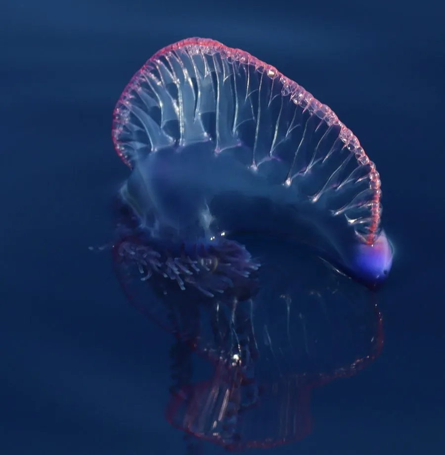

其他无脊椎动物 · 动物界
僧帽水母 Physalia physalis

由多个特化个体组成的群体性管水母，形似蓝色小帆船，被称作葡萄牙战舰，触手可长达数十米，蜇伤剧痛危险。
- 分类
- 门刺胞动物门纲水螅纲目管水母目科僧帽水母科属僧帽水母属
- 栖息环境
- 热带与亚热带开阔海面，靠风力与洋流漂流
- 地理分布
- 全球热带、亚热带海域，中国南海与东海可见
- 保护级别
- 暂无评估
物种志
僧帽水母的浮囊体呈蓝紫色、半透明，形似僧帽或船帆，长 9–30 cm，内部含气体可调节浮力，靠风推动漂移；浮囊下方垂着多组触手，最长可伸达 10–30 m，触手上密布刺细胞。它属于水螅纲管水母目，与常见的水母不是同一类群。
它不是单一动物，而是由水螅体、生殖体、营养体、指状体等多种特化个体组成的群体。触手麻痹小鱼和幼鱼后，由营养体消化，营养在群体内共享。僧帽水母漂浮在热带和亚热带海面，常被风和洋流送到海滩，搁浅后仍能刺伤皮肤。蜇伤会引起剧烈疼痛、红肿和过敏反应，严重时危及生命。它广泛分布于全球热带、亚热带海域，中国南海和东海也能见到，是海滩上需要警惕的危险生物。
形态与习性
- 食性触手麻痹小型鱼类后由营养体消化，全群体共享
- 浮囊长 9–30 cm，内含气体调节浮力
- 触手可伸达 10–30 m，密布刺细胞
- 组成由多种形态特化的个体组成的管水母群体
- 毒性蜇伤剧痛，可引起过敏甚至休克
- 搁浅被冲上海滩后仍能刺伤，切勿赤手触碰
趣味知识
- 僧帽水母不是一只水母，而是许多特化个体组成的群体。
- 它的浮囊像一面小帆，靠风把整个群体推着漂洋过海。
- 搁浅在沙滩上的僧帽水母仍能蜇人，看到不要用手捡。